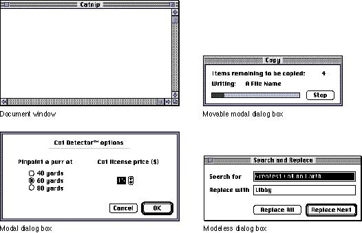

|
Chapter 5 - WindowsThis chapter describes document windows, which contain user data, and utility windows, which "float" above other windows and can provide tools or other controls that users can work with while document windows are open. The chapter presents specifications and recommendations about the appearance and behavior of these windows, including how the window frame should look, how the user interacts with windows, how you should display them on the screen, and how they interact with each other. This chapter includes some information about dialog boxes, but you can find more extensive information about dialog and alert boxes, both of which are also windows, in Chapter 6, "Dialog Boxes," which begins on page 175. |
|
Windows provide a way for people to view and interact with
their data. Windows have standard appearances that create a
sense of perceived stability for people because they have a
standard way to view and interact with all the different
kinds of data they can create and store on Macintosh
computers.
A window is a view into the document--if the document is larger than the window, the window is a view of a portion of the document. The application puts one or more windows on the screen, each window showing a view of a document or of auxiliary information used in processing the document. Generally there is only one window per document. Multiple windows for the same document can confuse the relationship of windows to icons. The user may wonder, "which window do I close to close the document?" You can provide multiple views to a document by implementing the capability to split windows or by adding utility windows. (See the section "Splitting a Window" on page 157 and the section "Utility Windows" on page 135 for more information.) |
|
|
Figure 5-1 shows examples of the
standard window types, including dialog boxes.
Figure 5-1 Examples of standard windows  There are conventions for opening, closing, moving, sizing, scrolling, and zooming windows. This means that no matter which application people use, they know how to control windows on the screen and how to adjust windows in the desktop workspace for particular tasks or for their work styles. |
|
|
|
When people manipulate windows on the screen, they see immediate visual feedback. When people move windows, the graphic display keeps up with their movements using a dotted outline to represent the window as it moves on the screen, reinforcing their sense of direct manipulation. When people open and close windows, they see an illusion of such actions. All of these mechanisms emphasize that the user is in control and can directly manipulate "real" interface objects such as windows. See Inside Macintosh: Macintosh Toolbox Essentials for information on implementing windows. |
|
Chapter Contents |